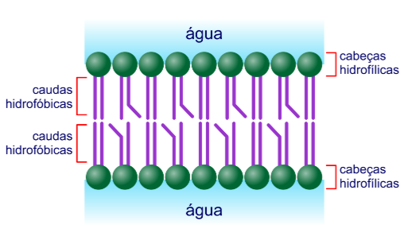
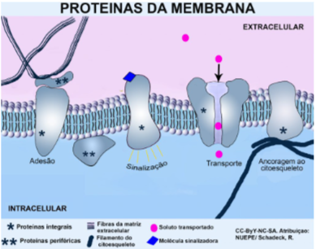
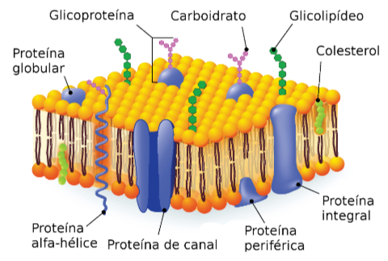

Estudo da menbrana plasmatica, oque é?, componposiçao, etc...
Resumo do Dia:

Membrana plasmática
A membrana plasmática é uma estrutura presente em todas as células e desempenha papéis cruciais na vida celular.
O que é?
A membrana plasmática é uma estrutura celular que atua delimitando as células, separando o interior celular do ambiente e funcionando como uma barreira que seleciona o que entra e o que sai. Essa estrutura possui espessura de cerca de 7,5 a 10 nm e é composta por uma dupla camada de fosfolipídios, na qual encontramos proteínas inseridas
Composição
Lipidios: Os lipídios são os componentes mais abundantes da membrana plasmática.
Fosfolipídios: Formam a bicamada lipídica, com uma região hidrofílica voltada para o exterior e uma região hidrofóbica no centro.
Glicolipídios: Contêm cadeias de carboidratos e estão presentes na superfície externa da membrana.
Colesterol: Contribui para a estabilidade e fluidez da membrana.
Proteínas de Membrana:
Integrais: Estão inseridas completamente na bicamada, atravessando-a de um lado ao outro.
Periféricas: Localizadas na superfície interna ou externa da membrana.
Desempenham papéis variados, como transporte de substâncias, reconhecimento celular e sinalização.
Carboidratos:
Encontrados principalmente como glicoproteínas e glicolipídios.
Participam do reconhecimento celular, adesão e comunicação.
Modelo Mosaico Fluido:
O modelo atualmente aceito descreve a membrana como um mosaico fluido, com lipídios e proteínas em constante movimento.
Principais funções
Permeabilidade Osmótica:
Controla a entrada e saída de água das células.
Essencial para a sobrevivência, evitando que a célula inche ou murche.
Permeabilidade Seletiva:
Regula a entrada e saída de outras substâncias além da água.
Proteínas específicas permitem a passagem seletiva de moléculas.
Proteção das Estruturas Celulares:
Todas as organelas celulares estão contidas internamente à membrana.
Protege o conteúdo celular e mantém a integridade das estruturas.
Delimitação do Conteúdo Intracelular e Extracelular:
Garante que o metabolismo celular ocorra em condições específicas.
Diferencia o ambiente interno da célula do ambiente externo.
Transporte Ativo de Substâncias:
Regula a entrada de substâncias vitais, como glicose.
Proteínas transmembrana coordenam essas entradas.
Endocitose e Exocitose:
Endocitose: Invaginação da membrana para a entrada de macromoléculas.
Exocitose: Liberação de substâncias para fora da célula por meio de vesículas.